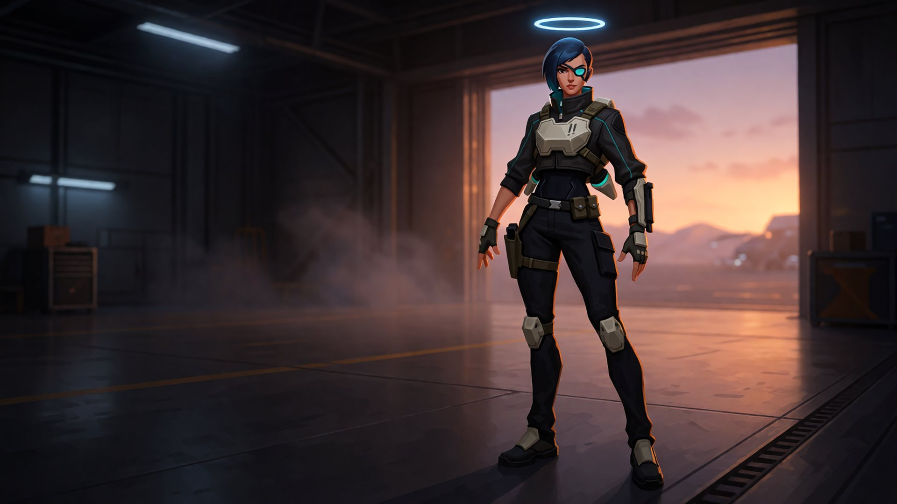
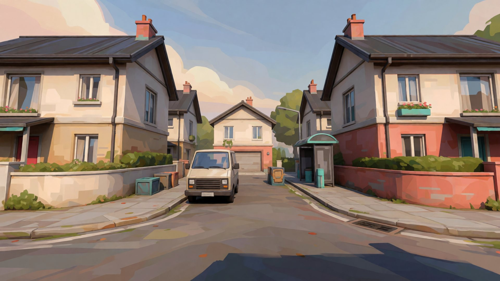

Find a new angle.
Sprint, slide, mantle and take to the air with a jetpack. Use ziplines to move through the fight.

Independent shooter · In development
Tactical gear. Fast feet. Every magazine matters.
Welcome to SHARD/LINE.
THE IDEA /
The freedom to push.
The decisions that make it count.
SHARD/LINE brings extraction-inspired equipment decisions into a stylized shooter with slides, jetpacks and ziplines. Build your approach around weapons, magazines and halo shields.
We’re building toward that vision one playable slice at a time. The current prototype focuses on a gun range and team deathmatch with friends.
Sprint, slide, mantle and take to the air with a jetpack. Use ziplines to move through the fight.
No exact ammo counters. Check your magazine for an estimate, manage reloads and make your shots matter.
Energy shields protect different body zones. The halo above each player makes their equipment’s weight class visible.

THE PLAYABLE SLICE /
Get a feel for movement and weapons in the range, then host a team deathmatch on Showhome: a neighborhood still under construction.
This is an early prototype. Maps and visuals are still being built; expect rough edges and changes as development continues.
BETTER WITH FRIENDS /
One player hosts the match from inside the game. Everyone else joins.
Download the Windows installer below when a build is available.
Open Play → Host Game, or jump into the gun range.
Share your join code or IP address. Friends connect through Play → Join Game.
EARLY ACCESS TO THE PROTOTYPE /
A work in progress. A fight worth joining.
Windows installer · Early development build
Checking for a build…Checking installer availability.
Prototype for playtesting with friends. Features, performance and visuals are still evolving.
BEFORE YOU DROP IN /
No. This is a playable prototype centered on the range and team deathmatch. The broader extraction-shooter vision is still in development. The artwork on this page shows the intended visual direction.
On the same local network, join the host’s local IP or join code. Over the internet, the host needs to forward UDP port 47820 to their gaming PC, or everyone can use a shared VPN mesh. Join codes contain an address and port; they are not a relay service.
The download is for Windows. Minimum and recommended hardware specifications have not been established yet.
A build may not have been published yet, or the download server may be temporarily unavailable. Check back when the next installer is ready.